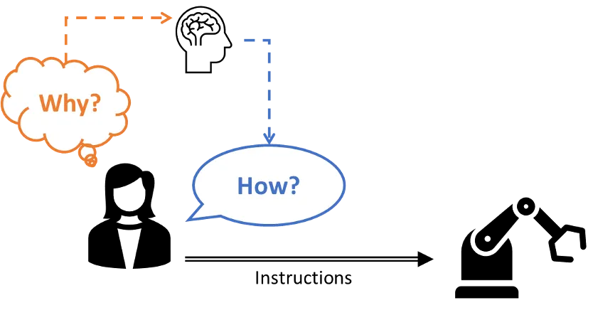
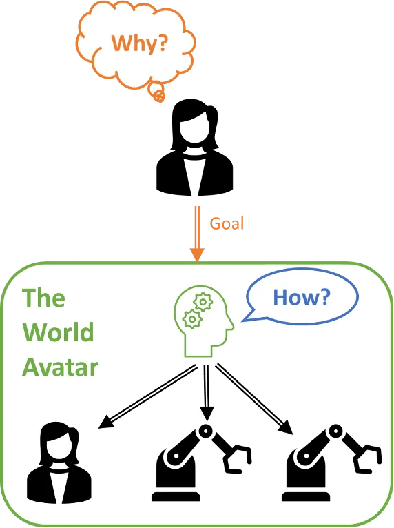

This blog offers informed opinions and perspectives relating to nascent technologies in data-centric engineering. Prof. Markus Kraft discusses work towards human-in-the-loop modelling at scale, conducted via the Centre for Advanced Research and Education in Singapore.
Human-in-the-loop models represent the interaction between humans and automated systems, where human input is needed to operate, train, or improve a system. In these models, humans are integrated into the workflow of an automated process as both the goal-setter and goal-executor.

As a simple example, the task of baking a cake can be described as a human-in-the-loop system, where the human asks the why (the goal) and the how (the method). The why is broken into subgoals in the recipe, which the human can read and understand, such as: beat the eggs, weigh the flour, and turn on the oven. The human then carries out the how of these tasks using the correct tools: whisks, weighing scales, oven, etc.

More complex human-in-the-loop systems are prevalent across various industries, integrating human intelligence and decision-making with automated processes. From drug discovery and material science to robotic surgery and autonomous vehicles, human-in-the-loop systems harness the strengths of both humans and machines across diverse applications.
What these applications lack is a consistent knowledge model. The data lacks context. What is understandable to a human is incomprehensible to a machine. For example, the word “bank” can refer to a financial institution or the side of a river, and without semantic context, a machine cannot determine the correct meaning based on its usage. This is a fundamental barrier to the development of intelligent automation and AI systems.
The World Avatar project introduces a common framework for data representation, ensuring that information is interpretable, interconnected, and meaningful across different contexts and applications. This not only enhances the ability of machines to understand and work with human-generated data but also empowers humans to interact with machines in more intuitive and productive ways.
The project uses ontologies to represent any data or information in a logical knowledge graph. It uses semantic web technologies distributed over the internet to interact with any software and hardware. The entire ecosystem is dynamic, so new information is automatically cascaded through the entire knowledge graph. This revolutionary approach can autonomously determine the how for any given why.
So, what does this mean? Essentially, the World Avatar can derive information and knows how to solve problems. Given enough information, such a system would know exactly how to create new drugs, build a smart city, or reduce carbon emissions across entire industries. It could be applied to the world’s most complex and interconnected problems.

The World Avatar does not eliminate the human element; instead, it enhances and refines our role in the process. Humans remain integral, continuing to set overarching goals and participating actively in the execution of tasks. However, how we engage with the system and contribute to the workflow undergoes a transformative change.
In the World Avatar-enabled human-in-the-loop model, humans retain their position as goal-setters. We define the why, articulating our objectives and aspirations. This is a critical function, as it ensures that the system’s actions are aligned with our values, preferences, and desired outcomes.
Once the goals are set, the World Avatar takes the reins, navigating the complexities of the how. It draws from a wealth of interconnected knowledge (from quantum calculations to nationwide simulations) and breaks down the overarching objectives into sub-goals, creating a roadmap for execution.
What’s more, findings from the World Avatar can be used to control real-world processes. Our recent case study used cutting-edge laboratory equipment to control automated experiments via the results of simulations populated by data from and executed within, the World Avatar.
The World Avatar is ready to redefine human-in-the-loop systems, ushering in a new era of intelligent automation and human-machine collaboration. By seamlessly integrating vast repositories of knowledge through dynamic knowledge graphs and ontologies, the World Avatar transcends the traditional boundaries of automated systems, offering unparalleled ways to solve problems and make decisions.
To learn more about the World Avatar, watch the associated DCE webinar on YouTube.
Competing Interest: Prof. Markus Kraft is a Fellow of Churchill College Cambridge and Professor in the Department of Chemical Engineering and Biotechnology. He is the director of CARES ltd., the Singapore-Cambridge CREATE Research Centre.
Keywords: Dynamic Knowledge Graphs; Digital Twin Technology; Semantic Web; System of Systems; Automated Decision-Making; Human-AI Collaboration
This is the blog for Data-Centric Engineering, an open-access journal published by Cambridge University Press and supported by the Lloyd’s Register Foundation. You can also find us on LinkedIn and X. Here are instructions for submitting an article to the journal.